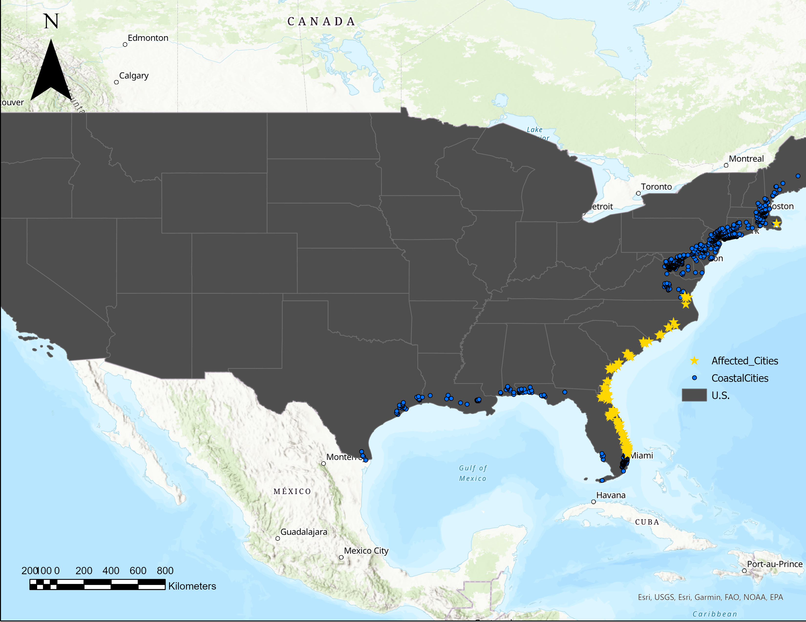
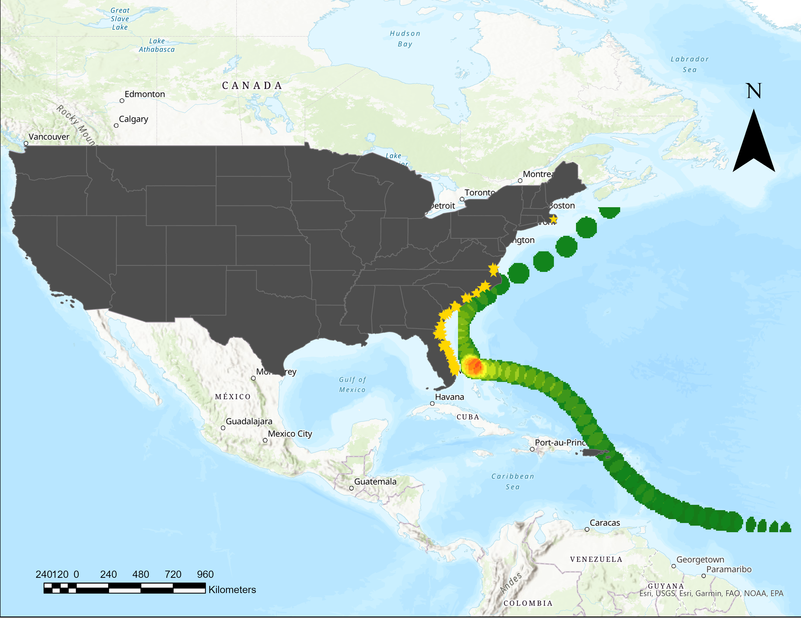

Mitchell Aitken, Julian Cramb, Jackson Cooper
In order to perform a full analysis of hurricanes, we will be analyzing one specific hurricane, it’s specific impacts and causes.
Hurricane Dorian was a category 5 hurricane that swept the Bahamas at the end of the summer of 2019. It formed in August 2019, and lasted a total of 9 days. It caused a total of over 4.5 billion US dollars worth of damage, and 84 fatalities. The hurricane developed with vigorous maximum speeds of 295 kilometer per hour winds. To put this in perspective, the highest recorded wind storm in Alberta saw wind speeds reaching up to 122 kilometers per hour, Hurricane Dorian had wind speeds almost 2 and a half times stronger.
Above, you can see two images. The first image shows a satellite view of the hurricane. In this image you can see the light winds funnel around the eye of the hurricane in a circular pattern at a distance, and the strong winds are right at the eye of the hurricane. The second image shows the tracks of the hurricane and the severity, it derived from a tropical wave in the Central Atlantic and hit it’s peak severity when it striked the Bahamas.
Dorian Affected Cities
This map was created by intersecting the wind path of hurricane Dorian with the coastal cities of the United States. This allows us to see cities that are in the direct pathway of the hurricane.
Dorian Intensity
This map was made by taking the pathway of Dorian and creating a density scale based upon the intensity of the hurricane. The intensity scale goes from green to red (less to more intense). We can now visualize the areas of the coast that saw different levels of intensity.
Dorian Extreme Intensities

This map was made by creating a buffer zone around the areas of the pathway with the highest intensity, this buffer was then intersected with the affected cities. We are now able to see which cities saw the most extreme parts of the storm.
The United States saw approximately $1.6 billion dollars of damage from this hurricane, there was widespread tree uprooting and some cities even had power outages. Luckily there were only four indirect deaths associated with the hurricane, this is mostly due to our ability to predict the pathway of hurricanes and take appropriate actions to reduce risk. This single analysis of hurricane Dorian allows us to draw some parallels between this data and the overall hurricane data. The main conclusion that can be seen is that the lower eastern coast of the United States is impacted the most harshly. This area of the coast was seen to be the most at risk for hurricanes, with the state of Florida seeing the most activity. We can use this knowledge to better plan for the future and better prepare that area of the coast for more catastrophic effects.
It is also interesting to see how certain areas are still in the pathway of the hurricane however they do not experience the same levels of intensity. That is why hurricanes can be so dangerous in the sense of knowing exactly how powerful the winds will be by the time it reaches a certain location. As we gain more and more data we will be able to better analyse future hurricanes and take the appropriate actions in order to further reduce the damage caused.